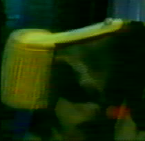
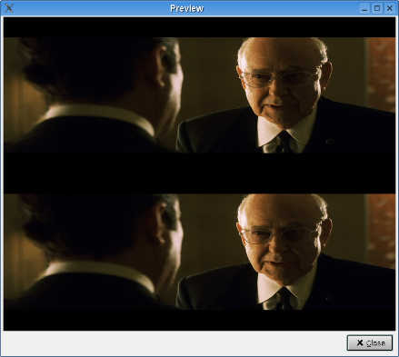

|
Video 1.Foreword This filter family deals with interlaced video. 2.Interlacing filters This is (yet another) port of Donal Graft. Its aim is to remove combing, including inverse telecine. Note that it does not alter framerate, and that you must use also Decomb decimate to do a proper IVTC. This is (yet another) port of Donal Graft. It removes frames according to several strategies. The most common usage is with telecide to do inverse telecide. This filter is a mix between the two above. It evals the current image and the Pal-shifted image, then takes the less interlaced one and smart deinterlace it. Since chroma is not taken into account, it can lead to small chroma error. It is a bit on the slow side, but very efficient when the video is of the good type. It can be used also as a cheap IVTC, as it will reconstruct the progressive frame, but will keep the video at 30 fps and will not discard duplicates to reach 24 fps.
This filter is a port of Donald Graft smart-deinterlace filter to YV12 It detects if the image is interlaced and blurs the interlaced parts. This filter takes two parameters :
This filter is a port of lavcodec deinterlacer You can select : This filter takes a field from an image and the other field from the next image. A lot of movie (and some DVD) are interlaced this way. This filter does not do any check, so activate it, preview it, and if you are happy with the result keep it. This filter has been written by Ron Reithoffer. If a field is too different from spatial/temporal neighbours (VHS drop out) it is discarded and replaced by an average value from previous and next frame line. According to the author, this must be the first filter in the filter chain, and will not work well with very interlaced image.
This filter is a port of Donald Graft kernel deint (avisynth), more stuff here. It is very efficient. 3.Fields related filters It is very common that capture card/capture software swaps the fields. It will look like a interlacing effect, but on the whole image, not only on moving part This filter swaps the fields back. Here is a short example, first the image which has swapped fields : 
And the ouput of the Swap Fields filter : It is also common that the capture card/software swaps fields back and forth several times. This filter tries to detect if the fields are swapped, and if so swaps them back. It is usually better to use this one, rather than the SwapFields filter. This filter will keep even field, i.e. even line numbers. It will halve the vertical resolution by 2 Same as above for odd field This filter will split a image in two images, each one receiving one of the field. So you will double the framerate, double the number of images, and halves vertical resolution. Opposite of above filter. Each field is put on top of one another. Useful to see if some blending occured/if the fields are progressive.  Opposite of previous filter. |